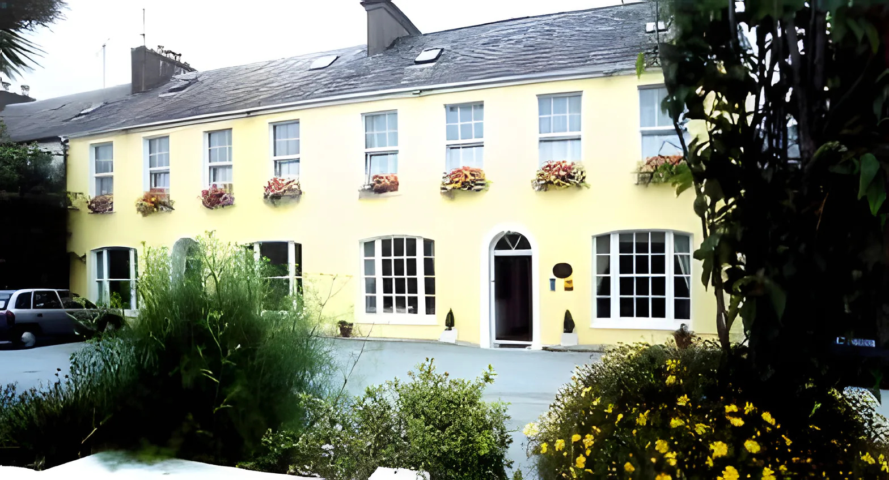
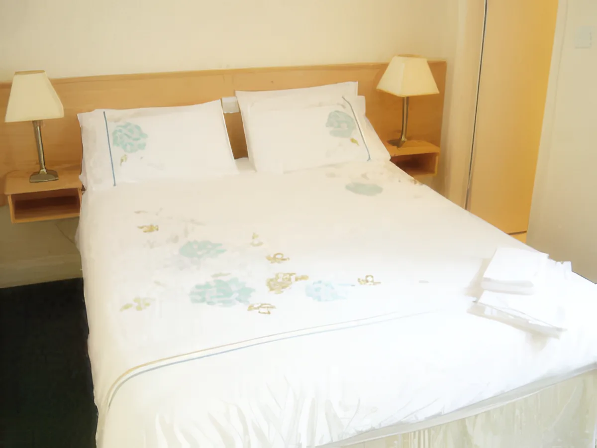
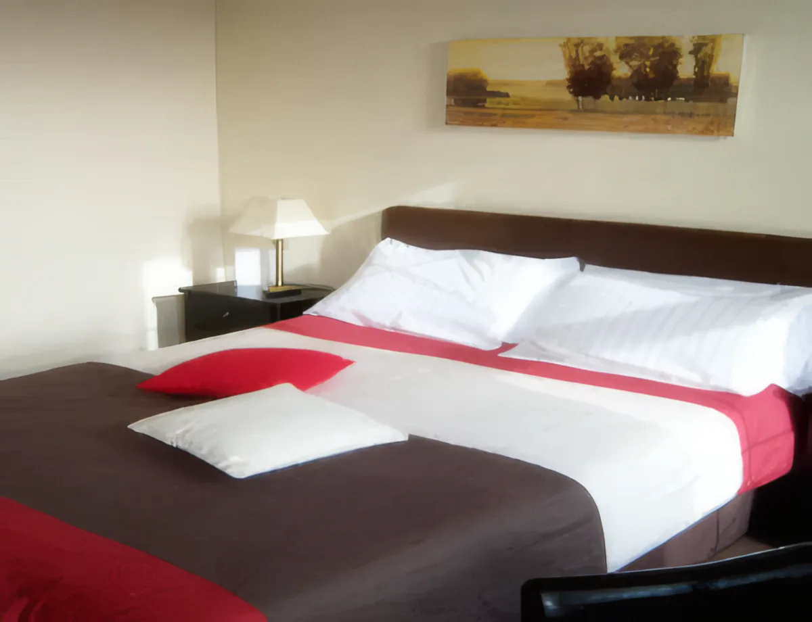
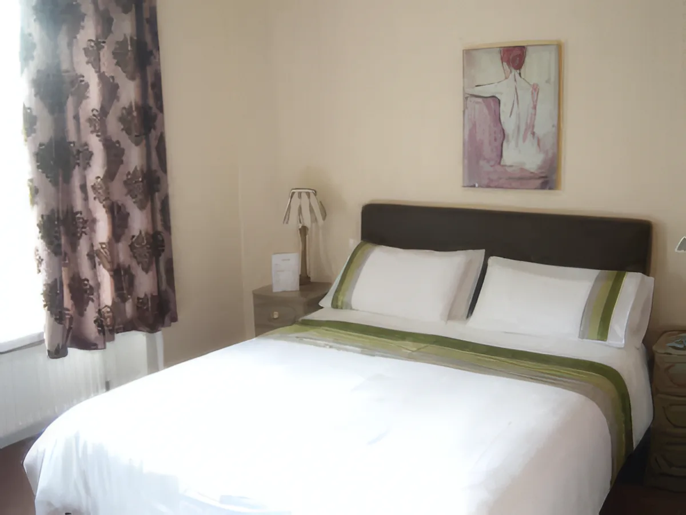
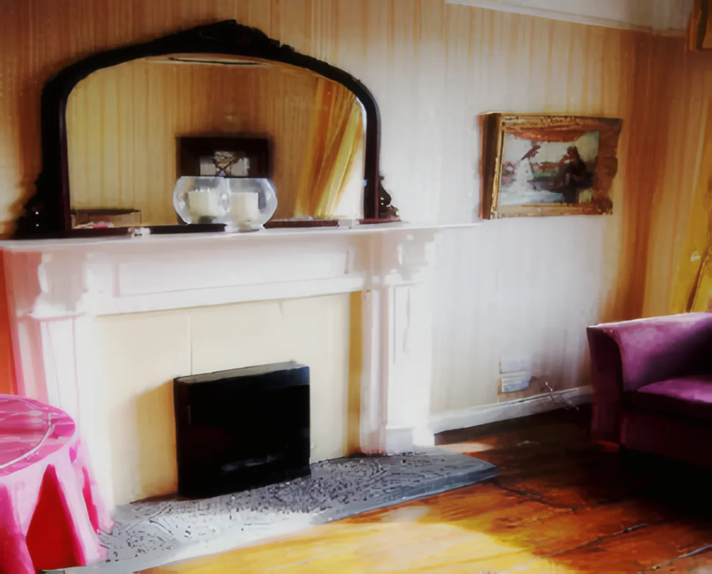
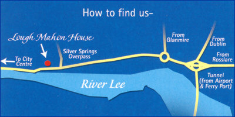

Lough Mahon House
A Georgian guesthouse five minutes' drive from Cork city centre, on the N8 Dublin road next to the Clayton Hotel Silver Springs. En-suite rooms, free WiFi, parking, and Joanne to welcome you.

From Joanne
Lough Mahon House is a Georgian guesthouse close to Cork city centre, and I'll have the pleasure of welcoming you. It's a great place to stay for trips to Fota Wildlife Park, Blarney Castle, Kinsale and Cork Golf Club.
The rooms
Every bedroom is en-suite and decorated to a high standard, with tea and coffee things in the room, a hairdryer and cable TV. All rooms are non-smoking.



Double €130Rooms & rates →

A lounge with a fireplace and a shelf of books
Relax in the guest lounge after a day out and browse through the books and magazines. There's cable TV in here too.
Rates, plainly
Per room, per night, room only. Ring or email Joanne to check your dates.
- Single roomOne guest, en-suite
- €80
- Double roomTwo guests, en-suite
- €130
Cancel with 24 hours' notice and there's no charge.
Rates as published on loughmahon.com. Our main kitchen is closed for renovation for now, so stays are room only.
In the house
- Bath or shower en-suite
- Tea & coffee in every room
- Free WiFi
- Parking
- Cable TV in bedrooms
- Cable TV in the lounge
- Central heating
- Hairdryers
- Non-smoking rooms
Five minutes from the city
We're on the N8 Dublin / Waterford road. Leaving the city going east, the house is on the left just before the Clayton Hotel Silver Springs. Drive times from our door:
- 0Lough Mahon HouseNext to the Clayton Hotel Silver Springs
- 2minLee TunnelTowards the airport and the ferry port
- 5minCork city centre
- 10minCork Golf Club
- 15minCork Airport
- 20minFota IslandFota Wildlife Park
- 30minRingaskiddy Ferry Port
Cork city and the River Lee. Photo: Nathan Hurst, Unsplash.

Our own "How to find us" map: the house sits on the city side of the Silver Springs overpass, above the River Lee.
Days out from the house
Ideally placed for the best of County Cork.
- 01Fota Wildlife Park20 min drive
- 02Blarney CastleCounty Cork
- 03KinsaleCounty Cork
- 04Cork Golf Club10 min drive
Close by: pub music, restaurants, shopping, scenic walks, horse riding, bicycle hire, tennis courts and the city's visitor attractions.
Book a room
Lough Mahon House, on the N8 Dublin / Waterford Road, Cork. Next to the Clayton Hotel Silver Springs, five minutes' drive from the city centre.
Mobile+353 87 692 7674
Emailinfo@loughmahon.com
Write to Joanne
Pick your dates and room and we'll write the email for you. It opens in your own mail app; nothing is sent until you press send.